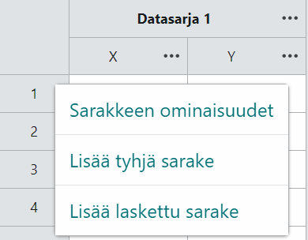
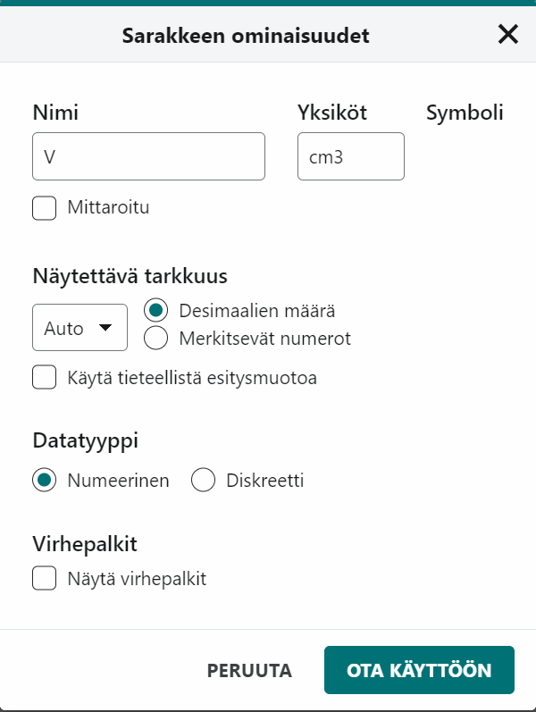

Graphical Analysis Pron taulukossa jokainen suure on oma sarakkeensa. Laskettu sarake laskee uuden suureen kaikille riveille yhdellä lausekkeella, ja kuvaaja päivittyy samalla.
Työvälineen käyttö: tarkista yksityiskohdat oman ohjelmasi tai laitteesi ohjeesta.
Tässä ohjeessa opit
- kirjoittamaan mittaukset taulukkoon niin, että jokaisella sarakkeella on suure ja yksikkö
- laskemaan mittauksista uusia suureita laskettuina sarakkeina
- laskemaan kertyvän summan ja kuvaajan alle jäävän pinta-alan lasketulla sarakkeella
Mihin tarvitset tätä
Tutkimuksessa Putoamiskiihtyvyyden määrittäminen heilurin avulla lasket jaksonajan neliön jokaiselle pituudelle, ja tutkimuksessa Hissin kulkema matka kiihtyvyydestä lasket tuhansista kiihtyvyyslukemista nopeuden ja matkan. Tutkimuksessa Liikemäärän säilyminen törmäyksissä sama lauseke lasketaan monelle törmäykselle.
Työvaiheet
-
Aloita uusi koe. Valitse aloitusikkunan kohdasta Uusi mittaus Manuaalinen syöttö, kun kirjoitat mittaukset itse, tai Mittaa antureilla, kun anturi mittaa (Anturit ja mittausohjelma). Tallennetun kokeen avaat painikkeella Valitse tiedosto.

Kuvakaappaus: Graphical Analysis (suomenkielinen käyttöliittymä). -
Nimeä sarake ja anna sille yksikkö. Avaa sarakkeen nimen vieressä olevasta kolmen pisteen painikkeesta (•••) sarakkeen valikko ja valitse Sarakkeen ominaisuudet. Kirjoita kenttään Nimi suureen tunnus, esimerkiksi
l, ja kenttään Yksikötm. Valitse kohdasta Näytettävä tarkkuus desimaalien määrä tai merkitsevät numerot niin, että luvut näkyvät mittauksen tarkkuudella, ja hyväksy painikkeella Ota käyttöön. Kuvaajan akselin otsikko tulee sarakkeen nimestä ja yksiköstä.
Kuvakaappaus: Graphical Analysis (suomenkielinen käyttöliittymä). 
Kuvakaappaus: Graphical Analysis (suomenkielinen käyttöliittymä); esimerkkiarvoja. -
Kirjoita mittaukset. Kaksoisnapsauta solua ja kirjoita luku, yksi mittaus riville. Lisää jokaiselle uudelle mitatulle suureelle oma sarakkeensa sarakkeen valikon valinnalla Lisää tyhjä sarake.
-
Pidä mitatut arvot koskemattomina. Älä muuta mitattuja lukuja. Laskettu suure saa oman sarakkeensa. Jos jätät jonkin pisteen pois sovituksesta, kirjaa piste ja syy, mutta älä poista riviä.
-
Laske uusi sarake lausekkeella. Valitse sarakkeen valikosta Lisää laskettu sarake, anna sarakkeelle nimi ja yksikkö ja kirjoita lauseke. Lausekkeessa sarakkeen nimi on lainausmerkeissä, ja se kirjoitetaan täsmälleen sellaisena kuin taulukon otsikossa näkyy. Anturin sarakkeet tulevat taulukkoon anturin antamilla nimillä, joten katso nimi otsikosta äläkä oleta sitä. Esimerkiksi jaksonajan neliö on
"T"^2, neliöjuurisqrt("h")ja etäisyyden neliön käänteisluku1/"r"^2. Laskutoimitukset ovat+ - * / ^, ja funktion argumentit ovat suluissa. Oma lauseke on Pro-ominaisuus. Ohjelma laskee sarakkeen kaikille riveille ja laskee sen uudelleen, jos korjaat mitattua arvoa. Tarkista yksi rivi laskimella. -
Kirjoita vakio lukuna. Lausekkeessa ei voi käyttää muuttuvia parametreja, kuten $A$ tai $B$, joten kirjoita vakio lukuarvona. Esimerkiksi painon $G = mg$ lauseke on
"m"*9.81, kun massa on kilogrammoina. Jos ohjelma ei hyväksy desimaalipistettä, kokeile pilkkua. Trigonometriset funktiot käyttävät radiaaneja, joten muunna asteina mitattu kulma ensin radiaaneiksi. -
Laske muutos ja kertyvä summa. Lauseke
delta("x")antaa rivin arvon ja edellisen rivin arvon erotuksen, joten ensimmäinen rivi jää tyhjäksi. Lausekesum("x")laskee sarakkeen arvot yhteen ensimmäisestä rivistä nykyiseen riviin asti eli antaa kertyvän summan. -
Laske pinta-ala kuvaajan alla. Lauseke
integral("a","t")laskee $(t, a)$-kuvaajan ja aika-akselin välisen pinta-alan alusta nykyiseen riviin asti: se laskee kahden peräkkäisen rivin välisen kapean suikaleen alan ja lisää sen aiempien suikaleiden summaan. Kiihtyvyydestä saat näin nopeuden muutoksen alusta lähtien. Se on nopeus vain, kun liike alkaa levosta. Kun lasket nopeussarakkeestaintegral("v","t"), saat siirtymän, joka on kuljettu matka vain, kun kappale liikkuu koko ajan samaan suuntaan. Kirjoita sarakkeiden nimet lausekkeeseen täsmälleen kuten taulukossa, myös anturin antamat nimet. Periaate on selitetty ohjeessa Nopeuden ja matkan määrittäminen mittausdatasta. -
Tuo data puhelimesta. Puhelimen mittaussovellus tallentaa mittauksen usein CSV-tiedostona. Graphical Analysis Pro avaa CSV-tiedoston, tai voit kopioida sarakkeet ja liittää ne taulukkoon (Ctrl+C ja Ctrl+V, macOS:ssä Cmd). Tarkista sen jälkeen sarakkeiden nimet ja yksiköt ja se, että pisteet näkyvät kuvaajassa.
-
Tallenna ja vie data. Tallenna koe ohjelman omana tiedostona (.gambl), jolloin lasketut sarakkeet säilyvät. Ohjelman vientitoiminto (englanninkielisessä versiossa Export data as csv) vie taulukon CSV-tiedostoksi esimerkiksi työselostuksen liitteeksi. Kuvaajan ja suoran sovituksen ohjeet ovat Mittauspisteiden kuvaaja ja Suoran sovittaminen mittauspisteisiin.
Ohjelmakohtaisia vinkkejä
- Pro-ominaisuudet. Omat lausekkeet, käsin säädettävä suora, sovitusparametrien epävarmuus ja video ovat vain Pro-versiossa. Jos et löydä lausekkeen kirjoituskenttää, kysy opettajalta, onko käytössäsi Pro-versio.
- Useampi mittaussarja. Käsin syötettävässä kokeessa uuden sarjan saat datasarjan nimen (esimerkiksi Datasarja 1) vieressä olevan kolmen pisteen painikkeen valikosta (englanninkielisessä versiossa Add New Data Set), ja samasta valikosta voit nimetä sarjan uudelleen (Rename Data Set), esimerkiksi "jousi 1".
- Väärä sarake. Sarakkeen voi poistaa (englanninkielisessä versiossa Delete Column). Poista vain itse tekemäsi laskettu sarake, älä mitattua.
Tavallisimmat virheet
- Sarakkeen nimi on lausekkeessa väärin. Lauseke antaa virheilmoituksen tai tyhjän sarakkeen. Kirjoita nimi lainausmerkkeihin täsmälleen kuten sarakkeen otsikossa.
- Liitetyt luvut eivät ole lukuja. Pisteet eivät näy kuvaajassa, tai sarake on tyhjä. Syy on yleensä desimaalierotin: CSV-tiedostossa se on usein piste.
- Lasketulla sarakkeella ei ole yksikköä. Akselin otsikosta puuttuu yksikkö. Anna yksikkö sarakkeen valikon kohdassa Sarakkeen ominaisuudet.
- Kulma on lausekkeessa asteina. Sinin tai kosinin arvot ovat järjettömiä. Muunna kulma radiaaneiksi.
- Mitatut arvot on korvattu lasketuilla. Laskua ei voi enää tarkistaa. Pidä mitatut arvot omissa sarakkeissaan.
Tarkista ennen kuin jatkat
- Jokaisella sarakkeella on nimi ja yksikkö.
- Mitatut arvot ovat muuttamattomina omissa sarakkeissaan.
- Laskettu sarake on tarkistettu yhdeltä riviltä laskimella.
- Koe on tallennettu, ja data on viety CSV-tiedostoksi, jos sitä tarvitaan muualla.
Tarvitset tätä tutkimuksissa: Äänen nopeus kulkuajasta, Putoamiskiihtyvyyden määrittäminen heilurin avulla, Hissin kulkema matka kiihtyvyydestä, Umpinaisen sylinterin hitausmomentti, Hiuksen paksuuden määrittäminen, Hypyn tutkiminen voimalevyllä, Sähkömagneettisen induktion tutkiminen, Kuuman veden jäähtyminen, Jousivakion määrittäminen, Kaasun tilanyhtälön kokeellinen tutkiminen, Kondensaattorin kapasitanssin määrittäminen, Lämmön johtuminen lämpökameralla, Leikkiauton nopeus ja lähtökorkeus, Liikemäärän säilyminen törmäyksissä, Liukukitkakertoimen määrittäminen, Valonnopeuden määrittäminen mikroaaltouunilla, Pallon muotokertoimen määrittäminen, Muuntajan tutkiminen, Pariston kuormituskäyrä, Planckin vakio LEDien avulla, Pudotus- ja pomppukorkeus, Äänen resonanssi putkessa, Taitekertoimen määrittäminen, Tuulivoimalan tutkiminen, Uppokuumentimen hyötysuhteen määrittäminen, Valaistusvoimakkuuden riippuvuus etäisyydestä, Vesivoimalaitoksen pienoismallin hyötysuhde